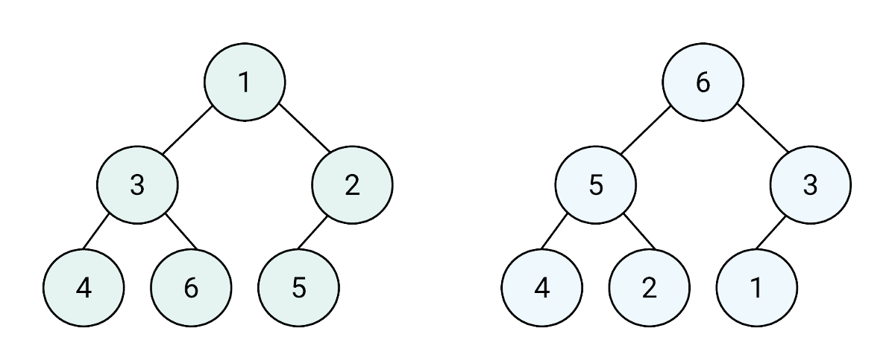

Def:Într-un arbore binar, pentru fiecare nod, având cel mult 2 fii, se va preciza poziția fiecărui fiu față de nodul tată sau părinte, fiind fiu stâng, respectiv fiu drept al nodului părinte.

Arborii binari pot fi implementați static în următoarele variante:
*Vector de structuri în care pentru fiecare nod i se memorează fiul stâng și fiul drept. Dacă un nod nu are unul dintre fii sau nici un fiu, e va memora valoarea 0. Rădăcina se memorează într-o variabilă.
*2 vectori (S și D) În care memorăm pentru fiecare nod fiul stâng și drept.
*Se pot utiliza 2 vectori cu n componente fiecare: vectorul de tați și vectorul în care se va memora -1 pentru fiul stâng, 1pentru fiul drept, 0 pentru rădăcină, numit vector de fi.
Arborii binari pot fi implementați și dinamic folosind recursivitatea.
*Se pleacă de la observația că fiecare nod al unui arbore este de fapt o rădăcină a unui sub arbore care conține toți descendenții săi. Astfel, un arbore binar poate fi definit așa:
-Rădăcină subarbore stânga al Rădăcinii și subarbore drept al rădăcinii